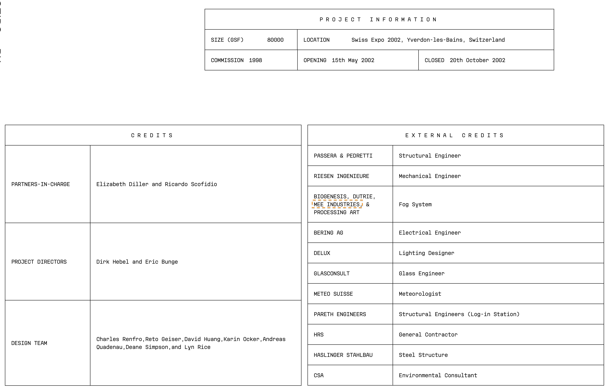
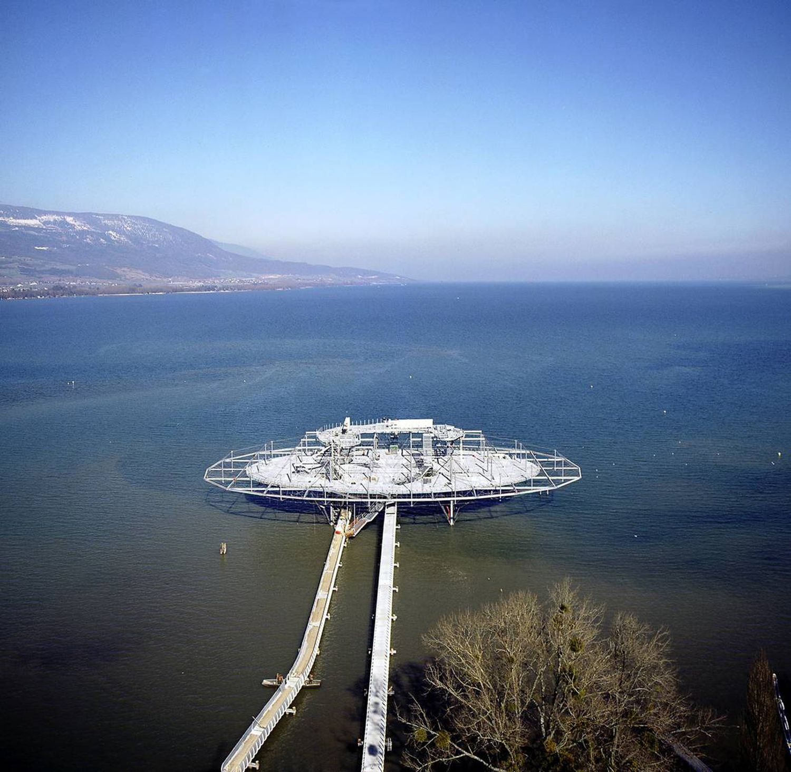
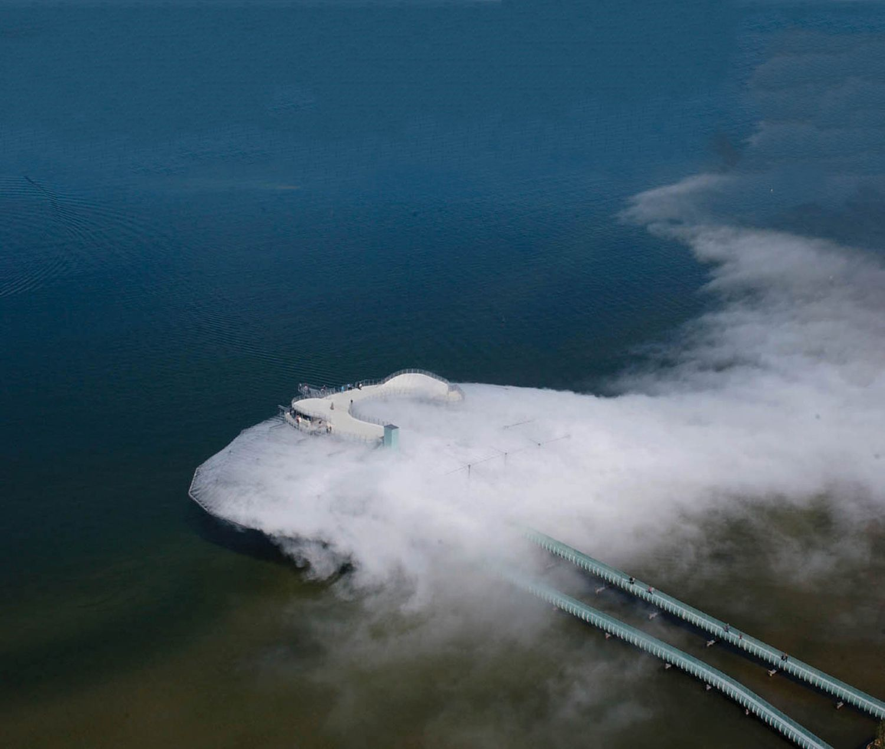
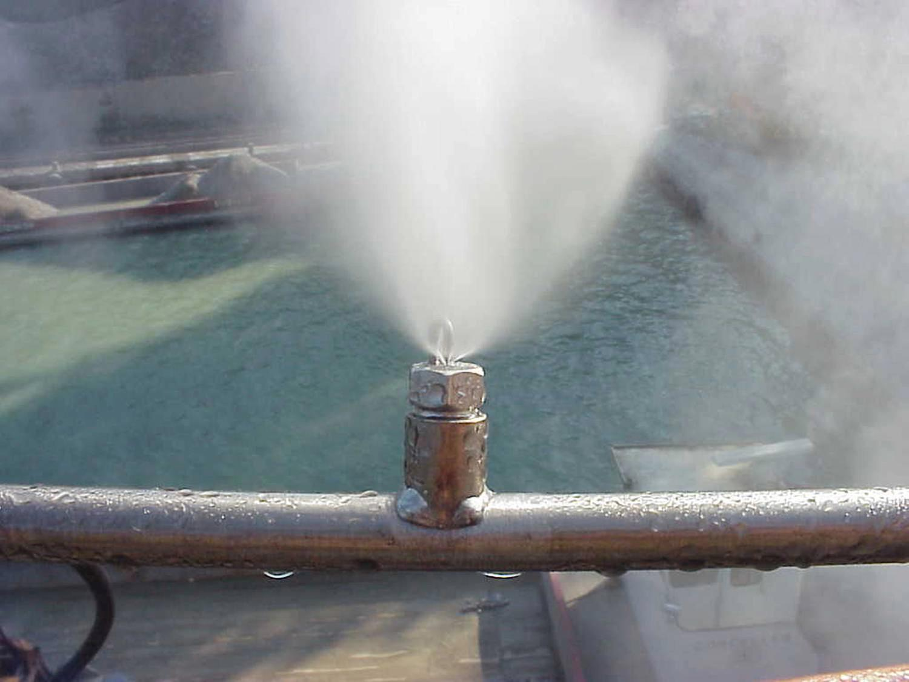
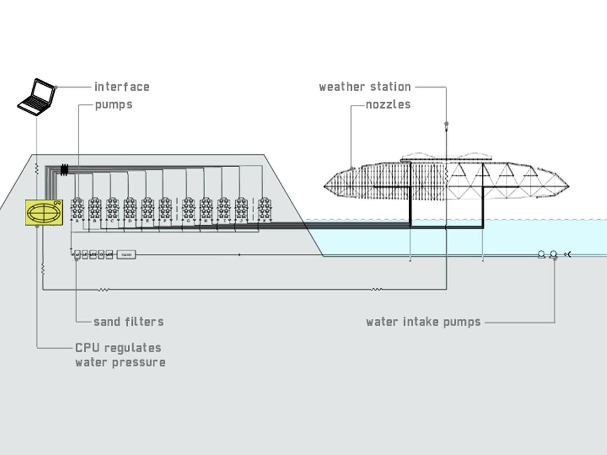
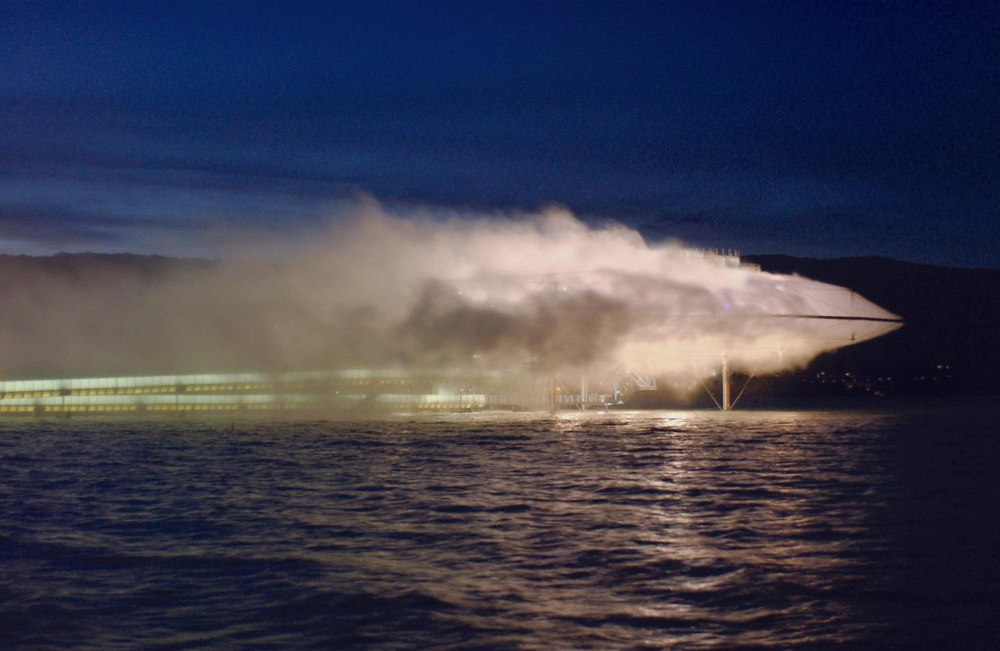
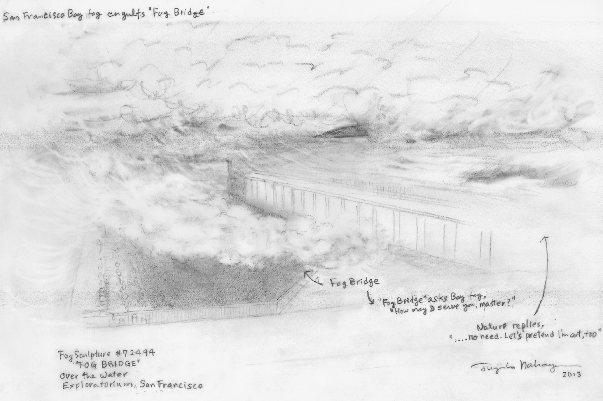

Session 2: Research Abstract
10, Oct, 2023
Bowen Tan
(Re)visions of Architecture:
Explorations of Sensation In The Blur Building
The Abstract:
The term sensation refers to the perception of sensory stimuli, including information received through the five senses: sight, hearing, touch, taste, and smell. Sensation in architecture encompasses the holistic experience of these sensory inputs, influencing how individuals interact with and perceive built environments. Indeed, it's essential to acknowledge that architecture often prioritises the visual aspect in shaping our experiences. From showcasing Serpentine Galleries projects on web platforms like Archidaily to the grand human spectacle of constructing towering skyscrapers, the visual aspect often takes centre stage in the world of architecture. Nevertheless, I would argue that we have the opportunity to shift towards an extreme approach that utilises design to avoid virtual sense, in a way to critique our "visually obsessed, high resolution/high definition" culture. To illustrate this transformation, take The Blur Building—an architectural atmosphere that Diller + Scofidio realised for Swiss EXPO 2002 in Yverdon-les Bains as the starting point, to find the reason behind how our high resolution/high definition" culture is formed and to unfold a broader spectrum of architectural possibilities beyond visual architecture.

Introduction:
In the world of architecture, our perception of the environment is inherently tied to the senses, with vision holding a preeminent role. However, the Blur Building pose a unique challenge, encouraging a 'revision of the vision'. Collaboration with meteorologists and environmental consultants provides a way for Blur Building to utilise water pumped from Lake Neuchâtel to create a fog-like atmosphere, it deliberately erases visual and acoustic references, distracting our dependence on vision, offering an immersive, low-definition experience.



According to Diller Scofidio's official website;
The Blur Building is an architecture of atmosphere—a fog mass resulting from natural and manmade forces. Water is pumped from Lake Neuchâtel, filtered, and shot as a fine mist through 35,000 high-pressure nozzles. A smart weather system reads the shifting climatic conditions of temperature, humidity, wind speed and direction and regulates water pressure at a variety of zones. Upon entering Blur, visual and acoustic references are erased. There is only an optical “white-out” and the “white-noise” of pulsing nozzles.

Contrary to immersive environments that strive for visual fidelity in high-definition with ever-greater technical virtuosity, Blur is decidedly low-definition. In this exposition pavilion there is nothing to see but our dependence on vision itself. It is an experiment in de-emphasis on an environmental scale. Movement within is unregulated. The public can ascend to the Angel Deck via a stair that emerges through the fog into the blue sky.

Water is not only the site and primary material of the building; it is also a culinary pleasure. The public can drink the building. Within, is an immersive acoustic environment by Christian Marclay. The lightweight tensegrity structure measures 300 feet wide by 200 feet deep by 75 feet high and is supported by four columns.


Cover